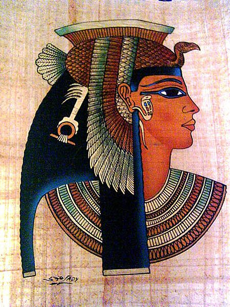

<!DOCTYPE html>
<html lang="ro"></html>
<head>
    <title>Arta în Egiptul Antic</title>
    <meta charset="utf-8">
    <link rel="stylesheet" type="text/css" href="proiect.css">
    <script type="text/javascript" src="acasa.js"></script>
    <!--    <base href="D:\facultate sem2\Tehnici Web\proiect" target="_blank">-->
</head>

<body>
<div class="header">
    <h1>Arta în Egiptul Antic</h1>
</div>

<div class="minigalerie">
    <div class="column left">
        <button id="acasa"><h2><a> Acasă</a></h2></button>
        <nav id="meniu">
            <button id="explore"><h2>Explorează</h2></button>
            <ul id="submeniu" style="list-style-type:none;">
                <li><a><h3>Arhitectura</h3></a></li>
                <li><a><h3>Muzica</h3></a></li>
                <li><a><h3>Quiz</h3></a></li>
            </ul>
        </nav>
    </div>

    <div class="column middle">
        <section>
            <h3>Introducere: </h3>
            <p>Arta Egiptului antic cuprinde pictura, bijuteriile, desenele de pe papiruși, sculptura, arhitectura și
                alte moduri de exprimare plastică dezvoltate de civilizația din valea Nilul din timpurile preistorice
                (circa 5.000 î.Hr.) până în momentul cuceririi romane (31 î.Hr.). Egiptul antic a cunoscut continuitatea
                istorică cea mai durabila dintre toate civilizațiile mediteraneene ale antichității. Condiția geografică
                (regiune izolată datorită zonei deșerturilor și unificată prin intermediul Nilului), opacitatea față de
                influențele culturale exterioare, toate acestea au dat naștere unui stil artistic specific, caracterizat
                prin continuitate. </p>
            <p>Arta egipteană antică include: picturi, sculpturi în lemn, piatră și ceramică, desene și caligrafie pe
                papirus, faianță, bijuterii, fildeșuri, și alte forme de exprimare artistică. Ele prezintă indirect o
                reprezentare a statusului socio-economic și a sistemului de credințele ale egiptenilor antici. </p>
            <p>În limba egipteană nu exista un cuvânt pentru <span style="font-style:italic"> artă </span>. Arta a avut
                un scop exclusiv funcțional care era combinat cu religie și ideologie.</p>
        </section>
        <section>
            <h3>Simbolistica:</h3>
            <p>Arta egipteană s-a dezvoltat în strânsă legătură cu religia și în special cu cultul morților, element de
                bază al religiei egiptene. Egiptenii credeau că o parte a ființei omenești, numită “ka”, nu piere odată
                cu trupul, ci continuă să trăiască, având aceleași nevoi ca și înainte să moară.</p>
            <p>Ca mijloace de prevedere, se construiau morminte masive, pentru a apăra rămășițele funerare o vreme cât
                mai îndelungată. Această practică a dus la dezvoltarea arhitecturii, sculpturii și picturii cu caracter
                religios-funerar, care aveau drept scop, potrivit cerințelor cultului, să preamărească înainte de toate
                pe faraoni, socotiți zei, și aristocrația. Săracii nu se bucurau de acest cult deosebit, ci erau
                îngropați direct în pământ, în coșciuge simple.</p>
            <p>Simbolistica joacă un rol important. Faraonii erau reprezentați deținând însemnele puterii. Culorile
                folosite sunt expresive: pielea roșie este specifică personajelor tinere, cea galbenă este utilizată
                pentru femeile de vârsta mijlocie care nu lucrau în aer liber. Semnificația culorilor era în primul rând
                religioasă, după cum urmează:</p>
            <br>
            <input type="radio" id="check" onclick="functie_tabel()"> Afiseaza tabelul:
            <table id="tabel" style="width:100%;visibility: hidden">
                <tr>
                    <th>Culoare</th>
                    <th>Semnificatie</th>
                </tr>
                <tr>
                    <td>Roșu</td>
                    <td>culoare negativă, aceasta fiind culoarea zeului Seth, zeul deșertului lipsit de viață și de
                        aceea zeul morții, al răului și totodată al dezordinii
                    </td>
                </tr>
                <tr>
                    <td>Verde</td>
                    <td>culoarea vieții vegetale și de aceea culoarea bucuriei și tinereții; era închinată zeului
                        Osiris, zeu al reînvierii și a nemuririi ce stăpânea lumea de dincolo
                    </td>
                </tr>
                <tr>
                    <td>Negru</td>
                    <td>era culoarea pământului fertil al Nilului – fluviu, care, prin revărsările sale, asigura
                        "reînvierea" veșnică a Egiptului an după an și garanta puterea și prosperitatea țării.
                    </td>
                </tr>
                <tr>
                    <td>Albastru</td>
                    <td>era culoarea cerului și a zeului acestuia, Amon</td>
                </tr>
                <tr>
                    <td>Galben</td>
                    <td>reprezenta aurul, un material prețios simbol al nemuririi zeilor și de aceea avea un caracter
                        sacru, el fiind destinat numai reprezentărilor zeilor și faraonilor
                    </td>
                </tr>
                <tr>
                    <td>Alb</td>
                    <td>simbol al purității și bucuriei, era culoarea coroanei Egiptului de Jos</td>
            </table>
        </section>

    </div>


    <div class="column right">
        <h2 id="titludr">FUN FACT CORNER</h2>
        <br><br><br><br>
        <div>
            <aside>
                <h4>Atât barbatii cât și femeile egiptene purtau machiaje elaborate.</h4>

                <p>Egiptul antic este considerat leagănul machiajului, el datând încă din mileniul al III-lea î. Hr.
                    Machiajul pentru ochi era în general verde (făcut din cupru) sau negru (făcut din plumb).</p>

                <p>Egiptenii credeau că machiajul are puteri vindecătoare. Antimoniul, sau Khol (creionul negru) cum îl
                    numim noi azi, cu care egiptenii îşi conturau ochii avea calitatea de a apăra ochii oamenilor de deşert.</p>
            </aside>
        </div>
    </div>
</div>

<div class="footer">
    <p>Vizualizezi pagina in data de: </p>
</div>

</body>
